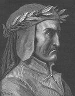
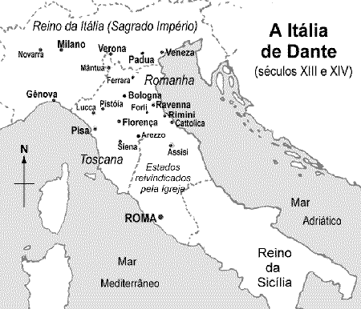

Dante Alighieri (1265-1321) ante Alighieri nasceu em Florença em 1265 de uma família da baixa nobreza. Sua mãe morreu quando era ainda criança e seu pai, quando tinha dezoito anos. Pouco se sabe sobre a vida de Dante e a maior parte das informações sobre sua educação, sua família e suas opiniões são geralmente meras suposições. As especulações sobre a sua vida deram origem à vários mitos que foram propagados por seus primeiros biógrafos, dificultando o trabalho de separar o fato da ficção. Pode-se encontrar muita informação em suas obras, como na Vida Nova (La Vita Nuova) e na Divina Comédia (Commedia). Na Vida Nova Dante fala de seu amor platônico por Beatriz (provavelmente Beatrice Portinari), que encontrara pela primeira vez quando ambos tinham 9 anos e que só voltaria a ver 9 anos mais tarde, em 1283. Nos tempos de Dante, o casamento era motivado principalmente por alianças políticas entre famílias. Desde os 12 anos, Dante já sabia que deveria se casar com uma moça da família Donati. A própria Beatriz, casou-se em 1287 com o banqueiro Simone dei Bardi e isto, aparentemente, não mudou a forma como Dante encarava o seu amor por ela. Provavelmente em 1285, Dante casou-se com Gemma Donati com quem teve pelo menos três filhos. Uma filha de Dante tornou-se freira e assumiu o nome de Beatrice. Em 1290, Beatriz morreu repentinamente deixando Dante inconsolável. Esse acontecimento teria provocado uma mudança radical na sua vida o levando a iniciar estudos intensivos das obras filosóficas de Aristóteles e a dedicar-se à arte poética. Dante foi fortemente influenciado pelos trabalhos de retórica e filosofia de Brunetto Latini - um famoso poeta que escrevia em italiano (e não em latim, como era comum entre os nobres), tendo também se beneficiado da amizade com o poeta Guido Cavalcanti - ambos mencionados na sua obra. Pouco se sabe sobre sua educação. Segundo alguns biógrafos, é possível que tenha estudado na universidade de Bologna, onde provavelmente esteve em 1285. A Itália no tempo de Dante estava dividida entre o poder do papa e o poder do Sagrado Império Romano. O norte era predominantemente alinhado com o imperador (que podia ser alemão ou italiano) e o centro, com o papa (veja mapa).

A Itália, porém, não era um império coeso. Não havia um único centro de poder. Havia vários, espalhados pelas cidades, que funcionavam como estados autônomos e seguiam leis e costumes próprios. Nas cidades era comum haver disputas de poder entre grupos opositores, o que freqüentemente levava a sangrentas guerras civis. Florença era, na época, uma das mais importantes cidades da Europa, igual em tamanho e importância a Paris, com uma população de mais de 100 mil habitantes e interesses financeiros e comerciais que incluíam todo o continente. A política nas cidades representava os interesses de famílias. A afiliação era hereditária. A família de Dante pertencia a uma facção política conhecida como os guelfos (Guelfi) - representados pela baixa nobreza e pelo clero - que fazia oposição a um partido conhecido como os guibelinos (Ghibellini) - representantes da alta nobreza e do poder imperial. Os nomes dos dois grupos eram originários de partidos alemães, porém os ideais políticos eram um mero pretexto para abrigar famílias rivais. Florença se dividiu em guelfos e guibelinos quando um jovem da família Buondelmonti não cumpriu uma promessa de casamento com uma moça da família Amadei e foi assassinado. As famílias da cidade tomaram partido por um lado ou por outro e Florença se dividiu em guelfos e guibelinos. Dante nasceu em uma Florença governada pelos guibelinos, que haviam tomado a cidade dos guelfos na sangrenta batalha conhecida como Montaperti (monte da morte), em 1260. Em 1289, Dante lutou com o exército guelfo de Florença na batalha de Campaldino, onde os florentinos venceram os exércitos guibelinos de Pisa e Arezzo, e recuperaram o poder sobre a cidade. Na época de Dante, o governo da cidade era exercido por representantes eleitos de corporações de operários, artesãos, profissionais, etc. chamadas de guildas. Dante se inscreveu na guilda dos médicos e farmacêuticos e disputou as eleições em Florença, tendo sido eleito em 1300 como um dos seis priores (presidentes) do Conselho da Cidade. A maior parte do poder em Florença estava então nas mãos dos guelfos - opositores do poder imperial. Mas o partido em pouco tempo se dividiu em duas facções. A causa foi novamente uma rixa entre famílias, desta vez, importada da cidade de Pistóia. Os Cancellieri era uma grande família de Pistóia, descendentes de um mesmo pai que tivera, durante sua vida, duas esposas. A família Cancellieri se dividiu quando um membro desajustado da família assassinou o tio e cortou a mão do primo. Os descendentes da primeira esposa do Cancellieri, que se chamava Bianca, decidiram se apelidar de Bianchi. Os rivais, que defendiam o jovem assassino, se apelidaram de Neri (negros) em espírito de oposição. A briga tomou conta de Pistóia e a cidade acabou sofrendo intervenção de Florença, que levou presos os líderes dos grupos rivais. Mas as famílias de Florença não demoraram a tomar partido e, por causa de uma briga de rua, a divisão se espalhou pela cidade, dividindo os guelfos em negros e brancos. Depois de criados, os partidos assumiram posições políticas. Os guelfos brancos, moderados, respeitavam o papado mas se opunham à sua interferência na política da cidade. Já os guelfos negros, mais radicais, defendiam o apoio do papa contra as ambições do imperador, que era apoiado pelos guibelinos. Os priores de Florença (entre eles Dante) viviam em constante atrito com a igreja de Roma que, sob o governo do papa Bonifácio VIII, pretendia colocar toda a Itália sob a ditadura da igreja. Em um dos encontros com o papa, onde os priores foram reclamar da interferência da igreja sobre o governo de Florença, Bonifácio respondeu ameaçando excomungá-los. A briga entre os Neri e Bianchi tornou-se cada vez mais intensa durante o mandato de Dante até que ele teve que ordenar o exílio dos líderes de ambos os lados para preservar a paz na cidade. Dante foi extremamente imparcial, incluindo, entre os exilados, um dos seus melhores amigos (Guido Cavalcanti) e um parente de sua esposa (da família Donati). No meio da confusão entre os guelfos de Florença, o papa decidiu enviar Carlos de Valois (irmão do rei Felipe da França) como pacificador para acabar com a briga entre as facções. A suposta ajuda, porém, revelou ser um golpe dos Neri para tomar o poder. Eles ocuparam o governo de Florença e condenaram vários Bianchi ao exílio e à morte. Dante foi culpado de várias acusações, entre elas corrupção, improbidade administrativa e oposição ao papa. Foi banido da cidade por dois anos e condenado a pagar uma alta multa. Caso não pagasse, seria condenado à morte se algum dia retornasse a Florença.
No exílio, Dante se aproximou mais da causa dos guibelinos (o império), à medida em que a tirania do papa aumentava. Ele passou o seu exílio em Forlì, Verona, Arezzo, Veneza, Lucca, Pádua (e também provavelmente em Paris e Bologna). Em 1315 voltou a Verona e dois anos depois fixou-se em Ravenna. Suas esperanças de voltar a Florença retornaram depois que o sucessor de Bonifácio VIII chamou à Itália o imperador Henrique VII. O objetivo de Henrique VII era reunir a Itália sob seu reinado. Porém a traição do papa, que ainda alimentava a idéia de ter um império próprio, seguida por uma nova vitória dos Neri e a morte de Henrique VII três anos depois enterraram de vez as suas esperanças. Na obra La Vita Nuova, seu primeiro trabalho literário de importância, iniciado pouco depois da morte de Beatriz, Dante narra a história do seu amor por Beatriz na forma de sonetos e canções complementadas por comentários em prosa. Durante o seu exílio Dante escreveu duas obras importantes em latim: De Vulgari Eloquentia, onde defende a língua italiana, e Convivio, incompleto, onde pretendia resumir todo o conhecimento da época em 15 livros. Apenas os quatro primeiros foram concluídos. Escreveu também um tratado: De Monarchia, onde defendia a total separação entre a Igreja e o Estado. A Commedia consumiu 14 anos e durou até a sua morte, em 1321, ocorrida pouco após a conclusão do Paraíso. Cinco anos antes de sua morte, foi convidado pelo governo de Florença a retornar à cidade. Mas os termos impostos eram humilhantes, semelhantes àqueles reservados à criminosos perdoados e Dante rejeitou o convite, respondendo que só retornaria se recebesse a honra e dignidade que merecia. Continuou em Ravenna, onde morreu e foi sepultado com honras. Fontes: [Encarta
97], [Larousse 98], [Mauro
98], [Musa 95], [Cambridge].
|